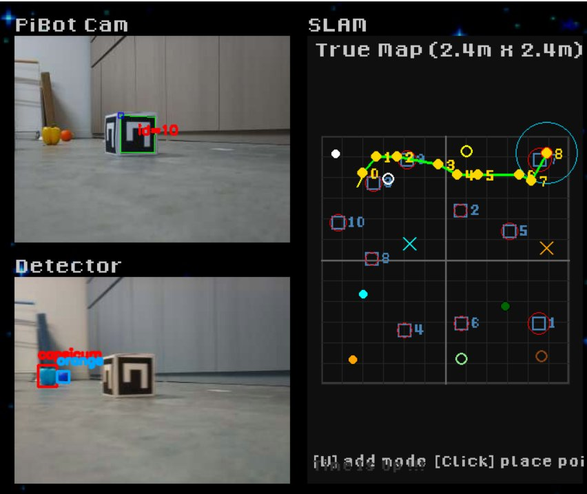
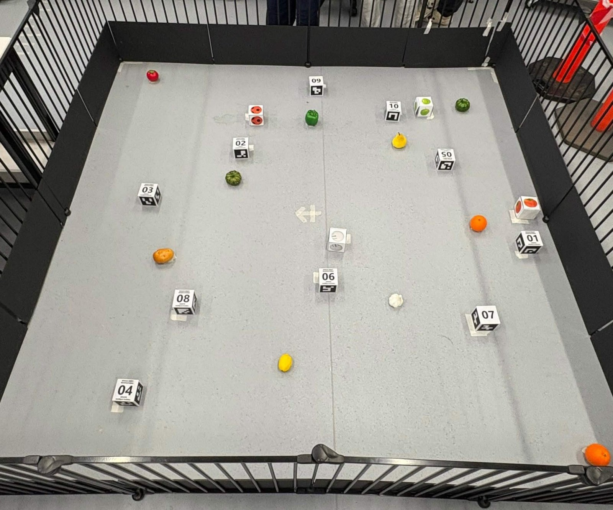

Autonomous Robot Navigation, SLAM & Fruit Detection
A camera-equipped mobile robot designed to map an unfamiliar arena, detect target fruits and autonomously navigate towards them while avoiding obstacles.

The challenge
Starting from the centre of an arena, the robot needed to localise itself with reference to ArUco markers, build a map, identify objects from a fruit shopping list, and reach each confirmed target within 10 cm. The robot also had to avoid known obstacles, search for hidden targets and evaluate map accuracy against a physically measured reference layout.
Autonomous decision-making workflow
My contribution
This was a group project with 6 members. I worked especially closely with one teammate to plan and integrate the end to end autonomous workflow. My main contribution centred on:
- Designing the high-level sequence for mapping, candidate fruit detection, target prioritisation, navigation and simulated collection.
- Integrating perception, EKF/SLAM localisation, path planning and robot movement into a coordinated search workflow.
- Repeatedly calibrating the robot and adjusting localisation/scale to minimise drift between the estimated and real-world map.
- Testing robot behaviour and investigating errors observed during longer autonomous runs.
System design
We trained the robot to recognise capsicum, orange, lemon, lime, pumpkin, potato, garlic, tomato and pear. When the robot saw something from far away, it first logged it as a suspected target, then moved closer for confirmation.
ArUco marker observations gave reference points for localisation and re localisation, while Dijkstra and A* supported navigation between potential targets. If no visible candidates remained, the robot moved to observation positions near the corners and rotated to scan for hidden objects.
Results and engineering lessons
The physical robot performed the intended mapping, detection, target-approach and search behaviours. One concealed target required extra exploration before it was found. During extended operation, accumulated position-estimation error caused the robot to overestimate some distances and occasionally contact obstacles. This highlighted the importance of calibration, repeated re-localisation and uncertainty management in autonomous robotics.
Development and testing


Physical robot demonstration
A short clip of the mobile robot operating in the physical testing arena. The video shows a short excerpt from our physical testing.